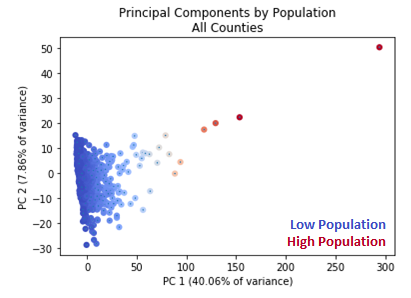
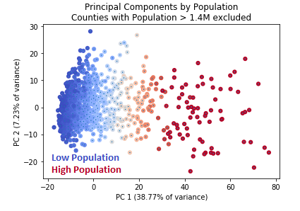
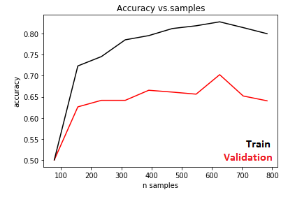
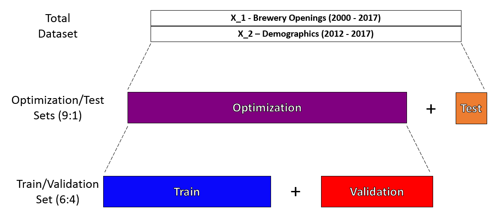
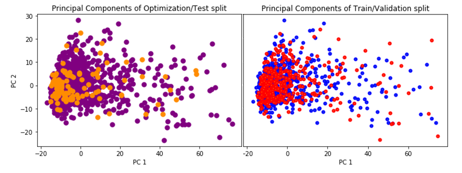
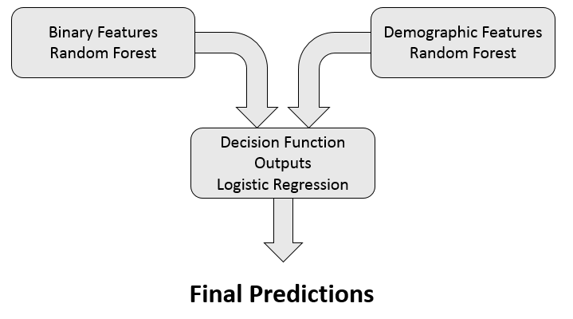
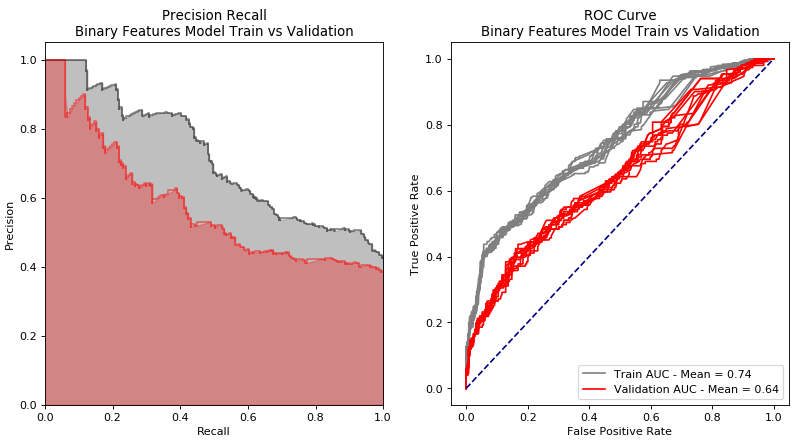
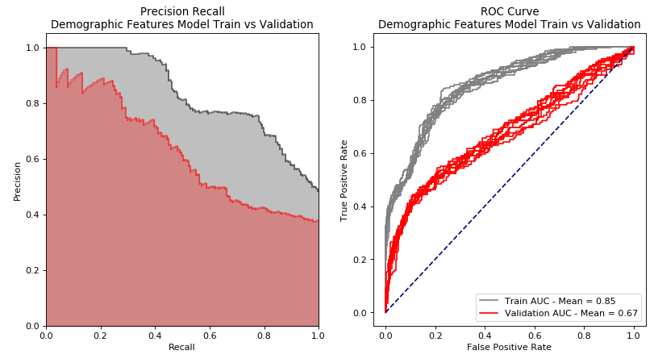
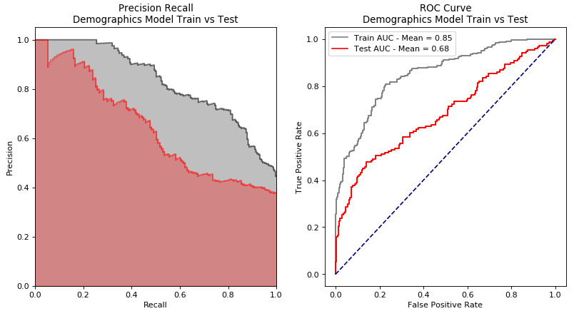
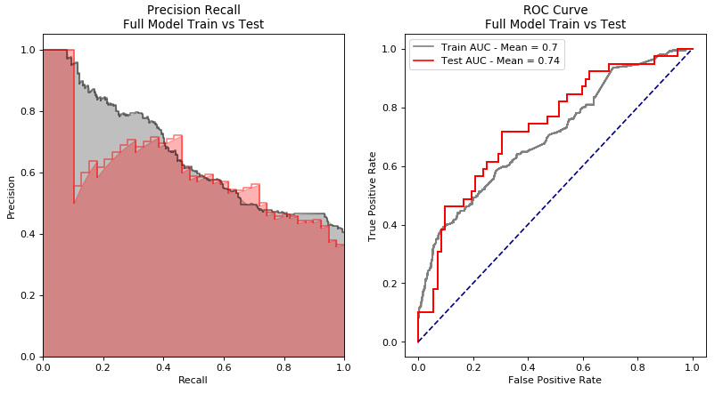

The Data Itself
Openbrewery Database
The Openbrewery Database contains information on about 8000 breweries. The Openbrewery Database has information on breweries in planning, but I decided to exclude them from my analysis for two reasons: First, I can't be sure that their coverage of breweries in planning is perfect. Second, I don't know how serious those plans need to be in order to be included. I can't be sure that both two friends in their garage who are "totally going to do it" won't be weighted the same as an investor who has assembled $2M, contracted a master brewer, and only needs to find a space.
The database also contains location information on the breweries. For most, this includes both street address and latitude/longitude (4600/7000). In order to intersect this data with the counties they are in, I could only consider those breweries which had latitude/longitude information. I increased the number which had latitude/longitude information significantly by geocoding (6000/7000), but I was unable to get the remaining 1000 or so breweries' latitude/longitude, and they had to be excluded.
Brewers' Association
In my initial analysis, I was only trying to predict the number of breweries that a county would have based on its demographics. This presented two issues: I had no way of knowing what the ground truth was, and I wanted to make a prediction for the next year. Without knowing which breweries were around in which years, I couldn't make a time-wise train/test split. I contacted the American Brewers' association since they had an interesting visual about the growth of the craftbrew industry (
you can find that here). They were kind enough to provide me with a dataset which consisted of brewery company names and the date they were founded or an estimation of that date.
This allowed me to slice my dataset by year, and see what each county's brewing scene was like for each year. In order to make my job a little bit easier, I looked only at whether or not at least one brewery opened in a county in a given year. This means that my model does not distinguish between counties where one brewery opened in a year and a county that had five open in a year. I decided to only consider the years from 2000-2017 as features for my model training, and used 2018 as my prediction vector.
US Census Bureau's ACS
The ACS reports demographic information in categories such as age distribution, racial composition, and education levels at the census block level. It also provides economic statistics of residents in areas such as rentership status, home ownership rates, income, and education. Even further, it provides lifestyle indicators such as methods of transport to and from work, whether or not people have roommates, and the percentage of residents who were born in a different county. The version of the ACS I used was taken from the Missouri Census Data Center, which aggregated the information at the county level.
I selected the five-year aggregation from 2012-2017 as the version I would work with, as it had the most complete and comparable information across counties. I could use a dataset with a smaller time window, but the margins of error on the statistics between counties would be larger, some of the data would be incomplete, and some counties would be missing entirely.
I used state information as a categorical feature by one-hot-encoding it. I also dropped the columns which corresponded to Margin of Error information, as I had no reason to believe that the margin of error in a county would be in any way predictive of whether a brewery would open in that county.
PCA, Train/Test Split, and Binary/Demographic split

I performed Principle Component Analysis on my data and saw that the population of a county seemed to account almost entirely for about 40% of the variance in my data. This was largely due to outliers such as Los Angeles County California which has an estimated 10,000,000 residents and is the most populated county in the United States. The median population of counties in my dataset was 25,700. As a result, I only considered counties with populations less than 1.4 M while building my model. This improved my PCA variance percentage a bit, but primarily it served to make the distribution more representably samplable.

I performed a shuffle of my data, as it was currently ordered by State, and made an optimization/test split of 9:1 and sequestered my test set from my model. I then did a train/validation split of 6:4, so I could accurately predict the performance of my model on the test set. I chose this size of split because in a test of train/validation split sizes on a very early model, I saw that performance did not increase much with the number of samples I had in my training set.

I plotted my optimization set with my test set in PCA as well as my training set with my validation set. I felt that by eye, my test set constituted a representative sample of my total dataset, so I felt comfortable moving forward. I also did not notice a significant bias in my train/validation split in the higher-population regime.


The Model
I split my dataset into two dataframes for building two separate models. Both are random forest classifiers, but I wanted to be able to select hyperparameters for the different datatypes separately. I used hyperopt to make hyperparameter selections. For my binary feature model, my loss function to minimize was -(validation set accuracy), and for my demographics model, my loss function was -(validation set ROC AUC). I combined the decision function outputs of my two random forest models with a logistic regression.

Model Training
During training, I evaluated model performance by inspecting Precision/Recall curves and Receiver operating characteristic curves to determine whether my model was overfitting. Below are the PR and ROC curves for my individual models.


The takeaway here is that neither on its own is standing out as performing very well. And when I combine their predictions by logistic regression, my performance on the validation set doesn't blow me away either.
However, when the performance from the full optimization set is compared to performance of the test set, the difference between the demographic model (the better performing of the two) and the full model is apparent. The full model clearly performs better on unseen data and generalizes very well.

